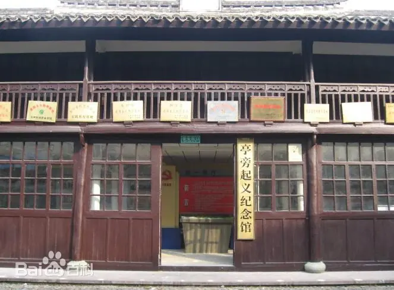

1901 年，包定出生于亭旁镇一个贫苦农民家庭，幼年靠 “半工半读” 完成学业，1925 年考入浙江省立第六师范学校（今台州学院），在校期间接触马克思主义，1926 年加入中国共产党。1927 年 “四一二” 反革命政变后，他放弃留校任教的机会，回到家乡亭旁，立志 “以武装斗争唤醒民众，推翻压迫”。
初回亭旁，包定面临的最大挑战是 “群众对革命的不信任”。当时农民受 “封建思想” 影响，认为 “反抗官府就是造反”，甚至对包定的宣传避而远之。包定没有急于宣讲理论，而是从 “解决群众实际困难” 入手：1927 年冬，亭旁遭遇旱灾，地主趁机抬高粮价，包定带领党员骨干，打开地主 “周大户” 的粮仓，将 300 余担粮食分发给贫苦农民。分到粮食的农民王阿毛拉着包定的手说：“包先生，你说的革命，要是能让我们年年有饭吃，我们就跟着你干！” 这次 “分粮行动” 让包定明白：“革命理论必须与群众利益结合，才能落地生根。”
1928 年春，包定在亭旁小学以 “国文教师” 身份为掩护，开设 “夜校”，教农民读书写字，同时讲解 “耕者有其田” 的革命理想。他编写通俗易懂的歌谣：“种田的人没饭吃，织布的人没衣穿，不是天公不作美，是因为土豪劣绅把财贪！” 夜校学员从最初的 20 余人，发展到后来的 200 余人，不少学员成为起义的骨干力量。

为筹备起义，包定秘密打造武器：他组织铁匠在自家柴房里锻造大刀、长矛，还带领党员骨干到深山里制作 “土炸药”；为获取枪支，他冒着生命危险，潜入国民党亭旁警察所，摸清枪支存放位置 —— 这些准备工作，体现了他 “一切从实际出发” 的务实精神。1928 年 5 月 26 日，包定在亭旁城隍庙召开起义誓师大会，当他举起土枪，高呼 “打倒土豪劣绅，建立苏维埃” 时，300 余名起义队员齐声响应，声音震彻山谷。起义军攻占镇公所后，包定在戏台上宣布成立 “亭旁区苏维埃政府”，并亲手写下《土地改革纲领》，第一条就是 “没收所有地主土地，按人口平均分配”。
然而，起义的胜利仅维持了 2 天。1928 年 5 月 28 日，国民党军队重兵 “围剿”，起义军在狮子山与敌军激战。包定身先士卒，手持大刀与敌军拼杀，多处负伤仍坚持指挥。当得知突围已不可能时，他果断下令：“分散突围，保存力量，革命火种不能灭！” 突围后，包定转移至临海、天台等地继续开展斗争，但由于叛徒出卖，1929 年 11 月，他在临海被捕。
在狱中，国民党反动派对包定威逼利诱：先是许诺 “只要悔过，就任命你为县长”，被包定严词拒绝；后又动用酷刑，打断他的双腿，逼迫他招供党组织名单。包定始终坚贞不屈，在狱中写下《绝命诗》：“碧血洒芳草，正气壮山河。笑看刀光闪，高唱国际歌！”1930 年 6 月 22 日，包定在杭州陆军监狱就义，年仅 29 岁。临刑前，他高呼 “中国共产党万岁”，声音回荡在刑场上，感染了在场的许多群众。
包定的革命实践，深刻印证了 “理论与实践相结合”的马克思主义基本原则。他没有照搬马克思主义 “武装斗争” 理论，而是结合亭旁地区 “农民贫困、封建势力强大” 的实际，通过 “分粮食、办夜校” 等具体实践，将理论转化为群众能感知、能参与的行动，体现了 “实践
返回